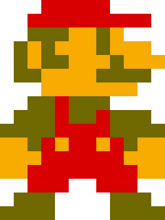

WebBizarro

Super Mario es un videojuego de plataformas, diseñado por Shigeru Miyamoto, lanzado el 13 de septiembre de 1985 y producido por la compañía Nintendo, para la consola Nintendo Entertainment System (NES).